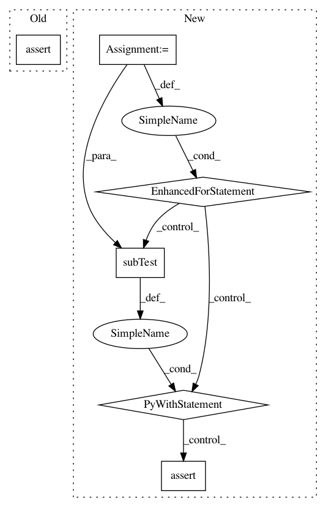

bdf2142281710cba0154bc5d63b3e8c55486509d,test/augmentables/test_polys.py,Test_ConcavePolygonRecoverer,test__remove_consecutive_duplicate_points,#Test_ConcavePolygonRecoverer#,2126
Before Change
)
points = [(0, 0), (0, 0)]
assert np.allclose(
recoverer._remove_consecutive_duplicate_points(points),
[(0, 0)],
atol=1e-8, rtol=0
)
points = [(0, 0), (0, 0), (1, 0)]
assert np.allclose(
recoverer._remove_consecutive_duplicate_points(points),
After Change
[(0, 0), (1, 0), (2, 0)]
]
for points_i, expected_i in zip(points, expected):
with self.subTest(points=points_i):
points_deduplicated = \
recoverer._remove_consecutive_duplicate_points(points_i)
assert np.allclose(points_deduplicated, expected_i)
// TODO split into multiple tests
def test__jitter_duplicate_points(self):
def _norm(a, b):
return np.linalg.norm(np.float32(a) - np.float32(b))
In pattern: SUPERPATTERN
Frequency: 3
Non-data size: 6
Instances
Project Name: aleju/imgaug
Commit Name: bdf2142281710cba0154bc5d63b3e8c55486509d
Time: 2019-08-30
Author: kontakt@ajung.name
File Name: test/augmentables/test_polys.py
Class Name: Test_ConcavePolygonRecoverer
Method Name: test__remove_consecutive_duplicate_points
Project Name: GRAAL-Research/pytoune
Commit Name: cc50b0085728cda00df44909a971384e7c585f3f
Time: 2018-01-13
Author: fredy_14@live.fr
File Name: tests/framework/test_model.py
Class Name: ModelTest
Method Name: _test_fitting
Project Name: jazzband/django-debug-toolbar
Commit Name: d428ae4aa8bd7ab7a2dc945f3e58987ba1c2cbcb
Time: 2020-09-21
Author: antoine.fontaine@gmail.com
File Name: tests/panels/test_history.py
Class Name: HistoryPanelTestCase
Method Name: test_post_json